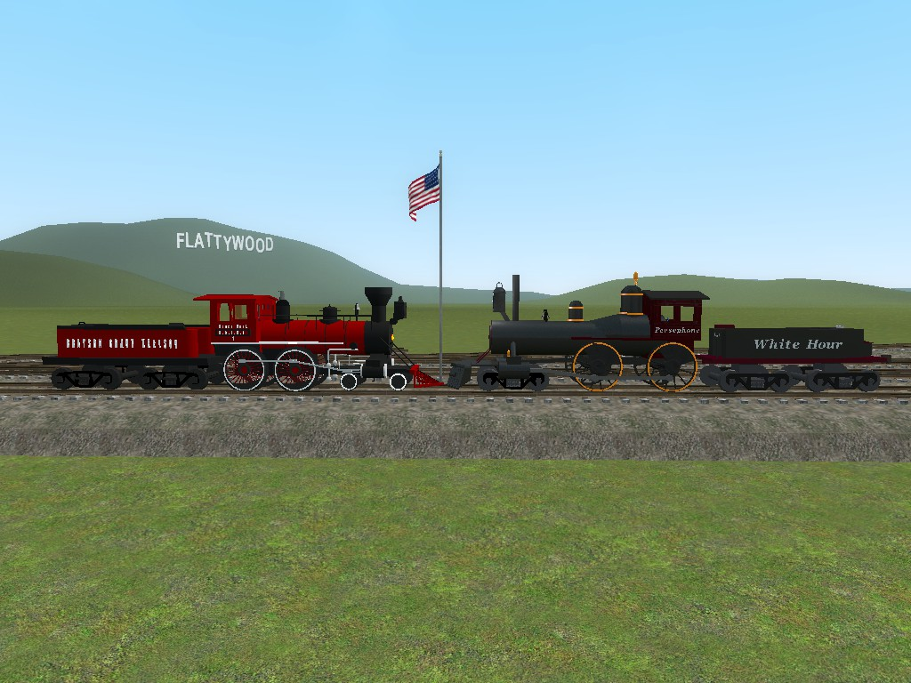
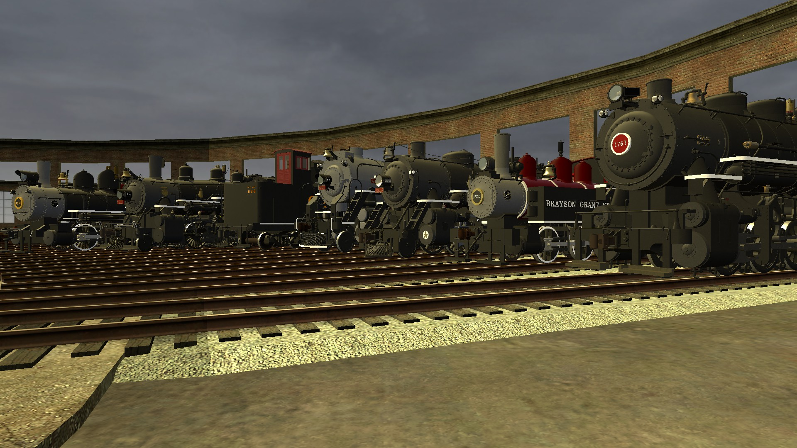
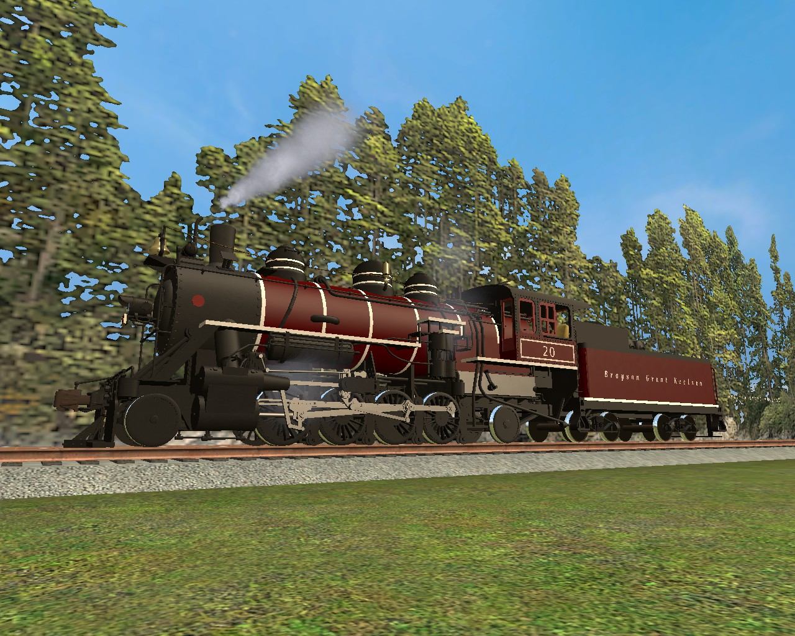

Brayson Grant Keelson Railroad Breif History
The Start
Started in 1874 out of Chattanooga, TN. the BGKRR would built west to Little Rock, AR. before turning north and south. The north mainline when up to Chicago, IL. while the south line when to New Orleans, LA. At a place call Keelson, TN., which was in the middle of the mainline in Tennesee, more mainlines stretched out going north to Nashville, TN. and south to Birmingham, AL. From all around the system branch lines sprouted out all over the southeast and midwest serving small town communities and industries for many years. As time when on the road pick up smaller roads and companies to help extend the company's reach. The BGKRR's favorite way of doing this was by subroading smaller companies to make quicker work of getting a hold of them.
Some More Info on the Road
The road was known for some great passenger trains too with names likes; The Red Arrow, The Cannonball, The Continentalin, The Coasta Vista, and of corse the flagship The Red Ruby. These train could rival some of the great names out their like the 20th Century Limited, the Crescent Limited, the Daylight, and the Orient Express. With great fast freights to get loads to shippers quickly as possible the BGKRR was known to be a class act operation. The railroad would run mainly with steam locomotives until 1959 and then until 1962 when the road fully transferred to diesels. Though steam would not be leaving the road as the railroad would start a steam program later in 1962 and the road would try to save as many as possible and would even start it's own railroad museum in Chattanooga, TN. Yes the BGKRR was a tough gentle giant of a railroad as it would survive the economical struggles of the 1960s and 70s and is still going strong today. At a 150 years the Route of the Red Ruby looks forward to the next 150 years of service to this great nation and it's people.
BGKRR 20
BGKRR 20 was built on March 3, 1909 for a logging company up in the pacific northwest. It was involved in an incident during October of 1910 and was put up for sale. Afterwards it was brought by the BGKRR along with it's sister No.9 for very cheap to used on branch lines around Grant, TN. No. 9 would become BGKRR 19 and No.10 would become BGKRR 20. No.20 would work on the BGKRR until May 20, 1962 when she was finally retired being the last steam locomotive in operation with the company and for 2 months 20 sat outside the shops at Brayson, TN. In July 1962, 20 was fired up again and pulled 4th of July specials and other fan trips. It was decided to keep doing trips like theses and to expand the reach of these trips as it had been a long time since some places had seen a steam locomotive so the BGKRR thought it would be a good publicity tool, and leading that charge was BGKRR 20. The BGKRR 20 would go everywhere on the system and off system, being in movies, TV shows, and once even traveling from Jacksonville, FL. to Anchorage, AK. under her own power, yes indeed she was famous and the BGKRR was proud to have her.
